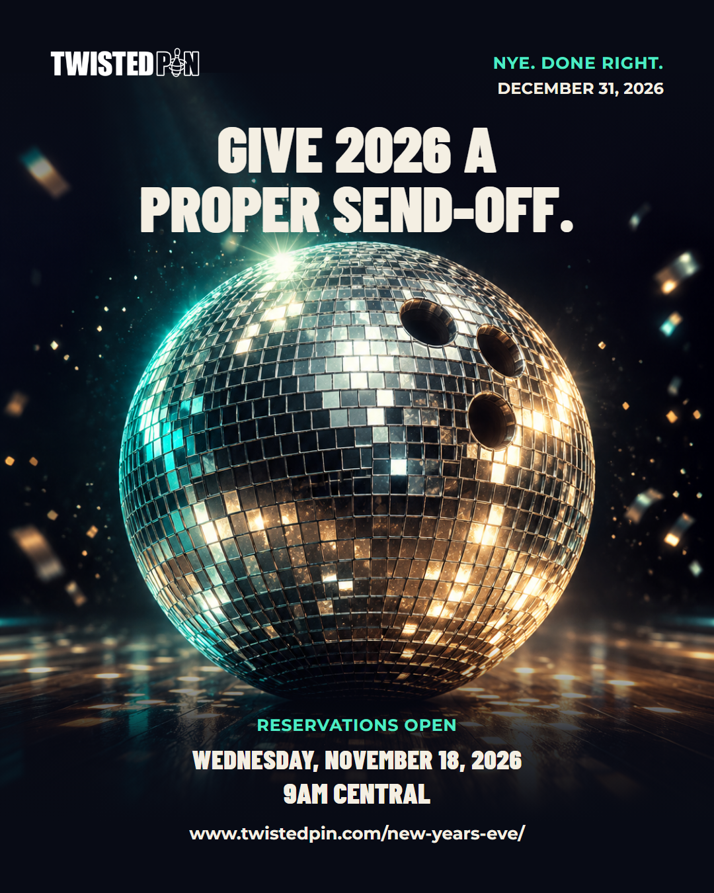
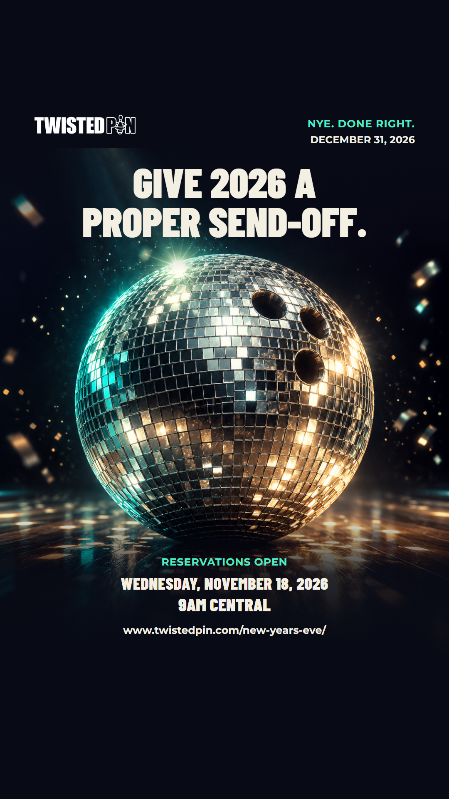

NEW YEAR’S EVE · RECOMMENDED ALTERNATIVE
Give 2026 a proper send-off.
Proposed: Wed, Oct 28, 2026, 12:00 PM Central
Choose this or 01-nye-set-the-clock for the same occasion. This is not an additional post.




Captions & publishing notes
Facebook caption
Instagram caption
Story: Give 2026 a proper send-off. December 31 at Twisted Pin. Reservations open Wednesday, November 18, 2026 at 9am Central.
Link sticker: See NYE details · https://www.twistedpin.com/new-years-eve/
Instagram bio wording requires the correct event link. Add the native Story link sticker in the clear lower area and inspect the actual app preview. Generated hero artwork is illustrative; it is not a photograph of Twisted Pin or its event.